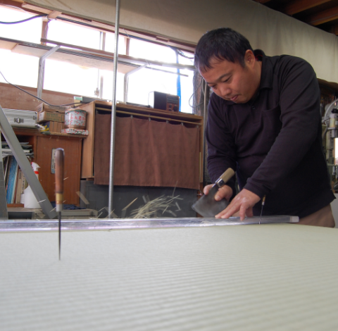
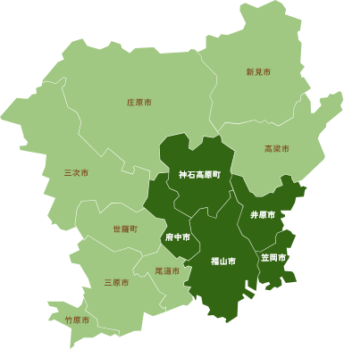

畳のショールームへ足を運んだことはありますか？
ショールームという程の大きさではありませんが、畳のサンプルやグッズを数多く ご用意しておりますので、 見て、触ってお選び頂けます。
イメージに合う畳のご提案もさせて頂きますので、お気軽にご来店ください。
もちろんお伺いしてお見積り・ご相談も可能です。
畳の素材を使ったグッズは
お知らせに随時アップしています
 ［電話受付時間］8:00~20:00
［電話受付時間］8:00~20:00 ご相談・お見積りお問い合わせ
ご相談・お見積りお問い合わせ
畳は生き物です。そのため畳は購入してから3～4年くらい経つと、茶色に変色してくるので裏替しをした方がいいでしょう。 また、10年くらい経ったら新品を購入しましょう。（使用する環境や畳床の種類によって耐久年数は変化します。） 古い畳は機能が低下し、衛生上にもよくありません。
ですが……ただ畳を変えるだけでは面白くありません。今より便利で使いやすい畳とこだわりの畳を当店のスタッフが親身になってご提案させていただきます。まずはお見積りください。
介護福祉の資格を持つスタッフが、高齢者も安心してご利用いただける畳をご提案することもできます。

福山市、府中市、井原市、笠岡市、神石郡
その他地域もご相談に応じますのでお気軽にお問合せください。

ショールームという程の大きさではありませんが、畳のサンプルやグッズを数多く ご用意しておりますので、 見て、触ってお選び頂けます。
イメージに合う畳のご提案もさせて頂きますので、お気軽にご来店ください。
もちろんお伺いしてお見積り・ご相談も可能です。
畳の素材を使ったグッズは
お知らせに随時アップしています